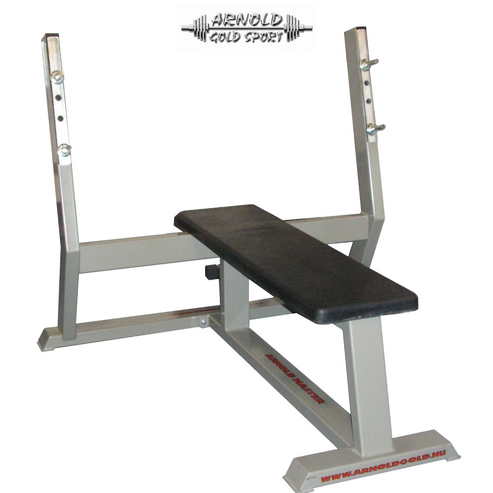
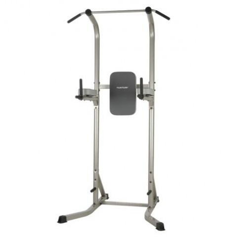
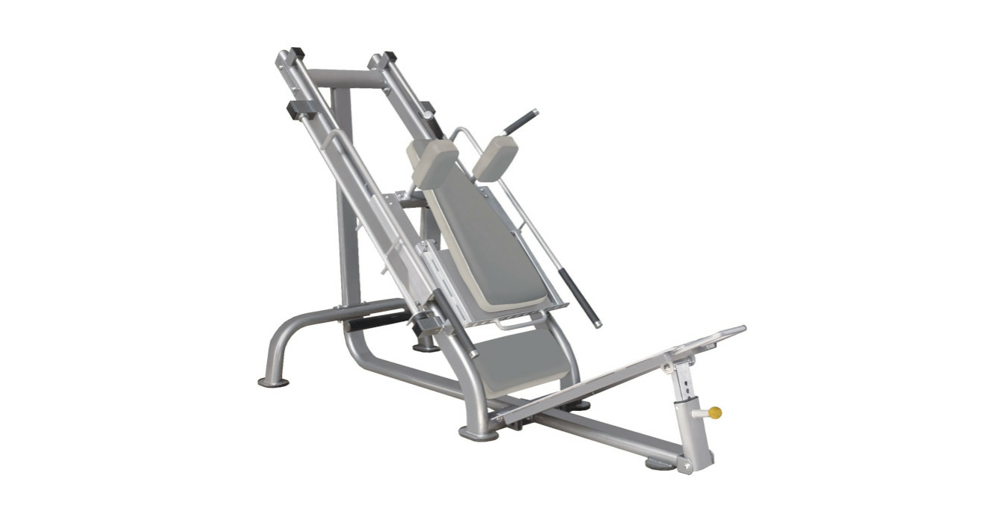
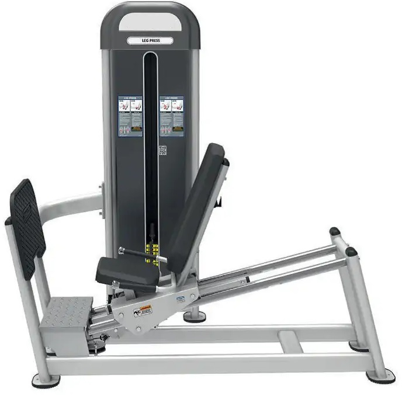
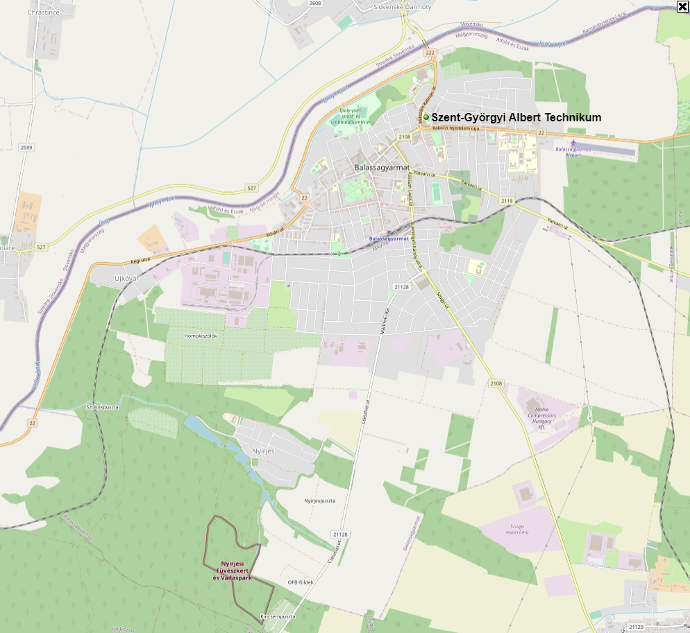

<
Kondi
Ne add fel! Ha változást szeretnél, akkor tegyél érte. Ez a hely a legjobb barátod lesz az életmódváltásban.
"Hogy sikeres legyél, minden kihívást el kell fogadnod, nem csak azokat, amik tetszenek”
“Az életem, a szabályaim, a döntéseim, a céljaim. Itt nincs helye a véleményednek”
Ha ma még nem hallottad...Hiszek benned!
Gépeink




Kezdő gyakorlatok
Angolul: Narrow reverse grip pulldown
Hatás
A lehúzás bicepszre a bicepszet és a széles hátizmok alsó részét dolgoztatja meg leginkább.
Kiinduló helyzet
Fogd meg a rudat szűk, maximum vállszélességű fogással, a tenyerek az arcod felé nézzenek.
A mozgás
Koncentrálj arra, hogy a bicepsz erejével húzd le a rudat a mellkasodig, majd lassan engedd vissza.
Edzéstipp
Itt nem fontos a hátizmokat összehúzni a mozdulat alsó pontján, mivel pont az a lényeg, hogy a karod erejével mozgasd a rudat. Az alsó ponton feszíts rá keményen a bicepszedre!
Angolul: Pushups
A fekvőtámasz az egyik legrégibb, legismertebb és legelterjedtebb általános erőnlét javító gyakorlat. A fekvőtámasz a mell, a tricepsz és a hát izmait is erősíti. Elvégzésének különféle módjai léteznek: széles támasszal, keskeny támasszal, felpolcolt lábakkal, pad közé, fekvőtámasz bakon, stb.
Addig engedd le magad, amíg a melled majdnem eléri a talajt, de ne érjen le.
Minden lefelé ereszkedés után tarts egy pillanatnyi szünetet, mielőtt kinyomnád magad.
A gyakorlat megkönnyíthető, ha a térdeden, és nem a lábfejeden támaszkodsz, és megnehezíthető, ha a lábaidat egy kis emelvényre helyezed.
Amennyiben szűkebb kartartást veszel fel, a terhelés java része áthelyeződik a tricepszre, míg szélesebb fogással a mellizmok végzik a nagyobb munkát.
Angolul: Dumbbell squat to a bench
Hatás
A padra guggolás helyesen végezve a négyfejű combizmot, a combhajlítókat és a farizmot dolgoztatja meg. Koncentráltan, lassan érdemes végezni, ami sokkal intenzívebb, ill. más jellegű terhelésnek teszi ki a combodat, mint a hagyományos guggolás. Térdfájósoknak jó alternatíva lehet (nyilvánvalóan a térdprobléma fokától és jellegétől függően).
Kiinduló helyzet
Fogj a kezedben egy pár kézisúlyzót. Egy padot húzz magad mögé úgy, hogy ha leguggolsz, pont rá tudj ülni hátra. A súlyokat a tested mellett hagyd lógni.
A mozgás
Lassan guggolj le, amíg a feneked meg nem érinti a padot, majd ha ez megtörtént, nyomban állj fel. Ne ülj le a padra, csak érintsd. Ez csak jelzés, hogy eddig tartott a mozgás.
Edzéstipp
A pad magasságának változtatásával szabályozhatod, hogy a guggolás mely szakaszát szeretnéd erősíteni leginkább. A guggolás edzésterv végére és elejére egyaránt beilleszthető, a vége azért lehet előnyösebb, mert nem kell eszetlenül nagy súlyokat tartanod a kezedben, hiszen már előfárasztottad a combjaidat. Sérülésveszélyt csak a hibás végrehajtás okozhat: ha nem egyenes a hátad, illetve ha a térded a lábfejed vonalánál előbbre kerül az alsó pozícióban. Ettől eltekintve, mivel nem lehet olyan nagy súlyokkal végezni mint a guggolást, ez egy teljesen biztonságos gyakorlatnak számít.
Angolul: Cable Rows
Hatás
A kábeles evezés a hagyományos, szűk fogantyúval végezve leginkább a hátizom alsó régióit dolgoztatja meg. A fogás szélességétől függően stimulálhatod a belső és külső részeket is.
Kiinduló helyzet
Ezt a gyakorlatot hosszú kábeles géppel kell végezni. Rögzítsd a lábadat a készüléken, majd húzd a fogantyút a tested középső része felé, vízszintes irányban.
A mozgás
Maradj ebben a helyzetben egy másodpercig, majd engedd a karodat lassan kiegyenesedni, amíg a széles hátizmok meg nem nyúlnak teljesen. Húzd be a fogantyút újból, és ismételd a mozdulatot. A karok kinyúlásakor próbálj meg arra törekedni, hogy a hátizom is megnyúljon, ne csak a karodat nyújtsd ki.
Edzéstipp
A gyakorlat végezhető egykezes változatban is, így maximálisan rá tudunk koncentrálni a célizomra, és nem mellékesen, még hátrébb tudjuk húzni a fogantyút, ami még erőteljesebb izom összehúzódást eredményez. A kábeles evezés szűken az erre alkalmas fogantyúval végezve főleg a hátizom alsó részeit terheli, azonban a fogás szélességével tetszőlegesen dolgoztathatjuk meg az edzeni kívánt részeket.
A kábeles evezés helyett jó alternatíva a .
Angolul: Lunges
Hatás
Ez a mozgás a combhajlítókat, a farizmokat és a négyfejű combizmot fejleszti. Miközben erőteljes izom-összehúzódás éri a combizmokat, ugyanakkor erőteljes nyújtó hatása is van a gyakorlatnak, ami ezáltal kiemelten hatékonnyá és komplexszé teszi. A kitörés helyesen végezve rendkívül intenzív, folyamatos terhelést biztosít, így mindenképpen érdemes beilleszteni a lábedzésedbe.
Kiinduló helyzet
Állj egyenesen. Egy nagy lépést lépj előre, és kinyújtott lábaddal lassan süllyedj guggolásba.
A mozgás
Amint leereszkedtél ebbe a helyzetbe, tégy egy újabb lépést előre a másik lábaddal, úgy, hogy közben kinyújtod az eddig behajlított lábadat, tehát fel-le ereszkedve lépegetsz előre, gyakorlatilag támadóállásban. A másik verzió, ha visszalépsz, és a másik lábaddal lépsz ki, majd azzal is vissza - így egy helyben kilépegetve, "helytakarékosan" tudod végezni a gyakorlatot.
Edzéstipp
Ha csak háromnegyedig nyomod fel magadat, vagy éppen csaknem teljesen, akkor állandó feszültséget tarthatsz fenn a négyfejű combizmokban. A kitörés edzés elején és végén egyaránt végezhető gyakorlat. A kitörés súllyal is végezhető: vagy fogj a kezeidben 1-1 kézisúlyzót, vagy a guggoláshoz hasonló tartással vegyél a hátadra egy rudat, tetszőleges súllyal megrakva, és így végezd a gyakorlatot.
Angolul: Dumbbell Presses
Hatás
A gyakorlat elsősorban az első és az oldalsó deltaizmokat fejleszti.
Kiinduló helyzet
Ülő helyzetben tarts két kézisúlyzót a vállaid magasságánál kicsit fentebb. Egyenes háttal, emelt fejjel ülj.
Mozgás
Nyomd ki mind a két súlyzót egyszerre a fejed fölé. A gyakorlat végzése közben ne dőlj hátra. Engedd vissza a súlyokat, és folytasd a gyakorlatot egyenletes ütemben.
Edzéstipp
Próbálj meg nem túlzottan homorítani a gyakorlat végzése közben, mivel ez sérülésveszélyes a hátra nézve. A karodat ne ""akaszd ki", ne nyújtsd ki teljesen a mozdulat végén. Felesleges terhelés a könyöknek és a tricepsznek, miközben a vállizom munkája már jelentéktelen. Érdemes ügyelni továbá arra, hogy az alsó holtponton ne engedd túl mélyre a súlyt, mivel ez felesleges igénybevételnek teszi ki a vállad ízületeit. Mivel elég sérülékeny területről beszélünk, célszerű preventív jelleggel valamilyen
Angolul: Deadlift
A felhúzás az erőemelés harmadik gyakorlata. Kétségtelenül a legnehezebb erőgyakorlat. A erő, a puszta fizikai erő igazi próbája. A guggolás mellett a leghatásosabb teljes testet megmozgató gyakorlat. Felállni egy képtelenül nagy súllyal, ez az igazi kihívás. A felhúzást kevesen csinálják, mert rosszul végezve igen sérülésveszélyes is lehet, ám jól kivitelezve az egyik leghatásosabb tömegnövelő alapgyakorlat.
Hatás
A gyakorlat a hát alsó és középső részének izomzatát, a csípő izmait, a combizmokat és csuklyás izmot is stimulálja. A fogást is erősíti.
Kiinduló helyzet
A felhúzás rúddal végzendő gyakorlat minden esetben. Állj úgy, hogy lábszárcsont éppen érintse a súlyzót. Hajolj előre természetesen, és ragadd meg a rudat az egyik kezedet előre-, a másik kezedet hátrafordítva (a fogóerő növelésére). Egyenesedj ki, természetesen használva lábad és hátad együttes erejét. Az emelés kezdetétől tartsd a rudat a testedhez a lehető legközelebb. Elképzelhető hogy a rúd felhorzsolja a bokádat... ez ilyen. Tekintsd harci sebnek!
A mozgás
Vedd fel a súlyt a padlóról, a hátadat végig egyenesen tartva. Nagyon fontos, hogy a hát semmiképpen nem szabad, hogy domború legyen, ez egyenes út a porckorongsérvhez! Végig tartsd egyenesen, vagy kissé homorúan a hátadat, és egy pillanatra se felejtsd el ezt a pozíciót megtartani. A rudat a testedhez közel tartva emeld fel, ameddig a rúd a combodat nem érinti. Ez után lassan engedd vissza a kiinduló pozícióba. Ismételd a gyakorlatot az előírt ismétlésszámmal.
Edzéstipp
Ha egyszer mestere lettél ennek a gyakorlatnak, végezheted a felhúzást nyújtott lábbal is. Ezt merev lábú felhúzásnak nevezik, és nagyon keményen megdolgoztatja a hát alsó részét.
Angolul: Pushups - Dip
Hatás
A tolódzkodás egy remek mellizom-gyakorlat, különösen, ha a rudak viszonylag távol (70-85 cm) vannak egymástól. Az egymáshoz túl közel lévő rudak nagyobb mértékben mozgatják a tricepszet, bár azért a mellizom alsó és külső részét is megterhelik. Tehát a tolódzkodás a mellre akkor fog leginkább hatni, ha relatíve széles fogást alkalmazol.
Amikor a melledet edzed a korláton, a lábaid legyenek a test mögött, álladat szegd le a melledre, könyökeidet nyomd ki oldalra.
A tolódzkodás mellre akkor a legindokoltabb, ha nincs a teremben negatív pad - mivel hasonló terhelést ad, mint a fekvenyomás negatív padon - valamint ha azt érzed, hogy változatosabb szögből érdemes megedzened a mellizmaidat. Mindazonáltal a tolódzkodás tricepsz gyakorlatként sokkal ismertebb, és talán hasznosabb is, amennyiben módosítasz a fogásszélességen.
A mozgás
Engedd le magad olyan mélyre, amennyire csak bírod, a kinyomás végén pedig nyújtsd ki a karodat. Ügyelj rá hogy a könyék ne legyen kiakasztva a csúcsponton. A mozgás legyen végig kontrollált, ne rugózz az alsó ponton, és ne végezd túl gyorsan a gyakorlatot.
Edzéstipp
A szélesebbre állított korláton végzett gyakorlattal a mell külső része edzhető. Minél szűkebb a fogás, annál inkább a tricepszre helyeződik a hangsúly. A tolódzkodás gépen is végezhető, itt vagy a tested részleges tehermentesítésén keresztül könnyítik a gyakorlatot, vagy egyszerűen más mechanikája lesz az egésznek, ami koncentráltabb végrehajtást tesz lehetővé.
Elérhetőségek

Telefonszám:06203456867
E-mail:kondi@gmail.com
Nyitvatartás:10:00-17:00